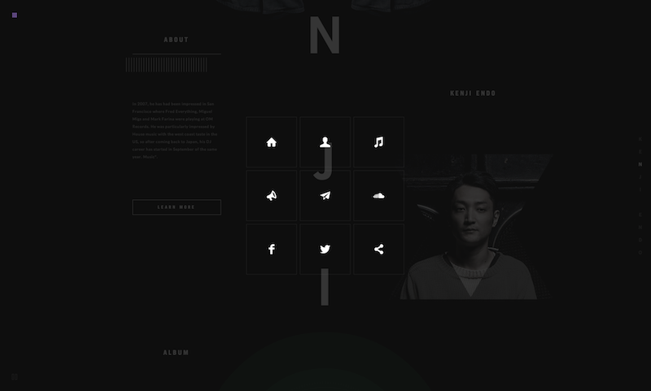

The Mystery of the Ordinary
This site is very successful for many reasons! Firstly, I love the way the site deals with the varying aspect ratios of Magritte's paintings. It makes the transitions very playful. This sense of playful exploration extends to the subtle hover states (and even off states) of the buttons. Sound, image, video, and good typography (in most places) enhances the mystery and keeps me intrigued as I navigate this decade+ of Magritte's paintings. P.s. The drag to reveal an x-ray of the paintings is nice too.

Leg Work Studio
Leg Work Studio is just one of many portfolio/studio sites that have "interesting" loading graphics. This particular one is probably not the most visually interesting, but it conveys the point that for a site on which you will inevitably be loading hi-res images or graphics, it is necessary to include a loading graphic. It is also often the first thing that a visitor sees when they visit your site, thus giving them a first impression to the experience they are about to have and the work they are about to see.
Leg Work Studio is just one of many portfolio/studio sites that have "interesting" loading graphics. This particular one is probably not the most visually interesting, but it conveys the point that for a site on which you will inevitably be loading hi-res images or graphics, it is necessary to include a loading graphic. It is also often the first thing that a visitor sees when they visit your site, thus giving them a first impression to the experience they are about to have and the work they are about to see.
Where are you?
My favorite internet thing for this week utilizes an expanded view of the content before you dive into reading. The user experience is a little wonky but the idea is nice: This larger space of a website that contains a series of deeper dives into content. Previewing content in this way allows you to prioritize stories based on layout which could be good or bad in an age of user digital interaction.
My favorite internet thing for this week utilizes an expanded view of the content before you dive into reading. The user experience is a little wonky but the idea is nice: This larger space of a website that contains a series of deeper dives into content. Previewing content in this way allows you to prioritize stories based on layout which could be good or bad in an age of user digital interaction.
Gyro
There are many sites that give visitors the option of changing the color scheme on the site. Gyro was one of the first that I saw that utilized this feature in an artful way and in a way that actually changes the way the site feels. This type of user customization could be seen as pointless, but in this case, it is well integrated.
There are many sites that give visitors the option of changing the color scheme on the site. Gyro was one of the first that I saw that utilized this feature in an artful way and in a way that actually changes the way the site feels. This type of user customization could be seen as pointless, but in this case, it is well integrated.
Palm Angels
As a scroll based interactive site, Palm Angels uses some very simple techniques that translate into visually interesting depth. The constant background video is a trope that is used frequently nowadays, but the way it interacts with the overlaid transparent images and type is very successful. The subtle treatment on the navigation is also super clean.
As a scroll based interactive site, Palm Angels uses some very simple techniques that translate into visually interesting depth. The constant background video is a trope that is used frequently nowadays, but the way it interacts with the overlaid transparent images and type is very successful. The subtle treatment on the navigation is also super clean.
Gabriella Montagne
Oftentimes, an artist or designer’s process page is dense with thumbnails bound to a grid and difficult to really dive into. This site, again, uses a very simple scroll technique to open up the grid of thumbnails. This allows for the progression of work to be viewed in many different ways and from many different angles.
Oftentimes, an artist or designer’s process page is dense with thumbnails bound to a grid and difficult to really dive into. This site, again, uses a very simple scroll technique to open up the grid of thumbnails. This allows for the progression of work to be viewed in many different ways and from many different angles.
Sweethearts
This may be my favorite Internet thing of the entire semester. Keeping with the theme of achieving very elegant visuals through simple techniques, this adaptation of a poem Emmitt Williams only uses tables to illustrate. As you scroll, the letterforms move and dance in an engaging and cinematic way.
This may be my favorite Internet thing of the entire semester. Keeping with the theme of achieving very elegant visuals through simple techniques, this adaptation of a poem Emmitt Williams only uses tables to illustrate. As you scroll, the letterforms move and dance in an engaging and cinematic way.
Map Project Office
One of the main reasons I chose this site is that I have never seen anything like it. Visually, the way the grid is engaged through the use of transitions moves the site away from a potential weird and clunky design, to a very orderly, yet innovative design. The type is a bit week, both in style and in spacing. Nevertheless, the main content treatment is well done.
One of the main reasons I chose this site is that I have never seen anything like it. Visually, the way the grid is engaged through the use of transitions moves the site away from a potential weird and clunky design, to a very orderly, yet innovative design. The type is a bit week, both in style and in spacing. Nevertheless, the main content treatment is well done.
Linked Scrolling Info
In an online world that is constantly fighting for users attention, it is useful to know how much time is expected of you when you enter the site. Although it is usually only a tactic on blog or journal sites, the use of the “time remaining” element fixed to the scroll bar is very helpful. I find myself allotting a certain amount of time to peruse these sites and am pleasantly surprised to find this feature.
In an online world that is constantly fighting for users attention, it is useful to know how much time is expected of you when you enter the site. Although it is usually only a tactic on blog or journal sites, the use of the “time remaining” element fixed to the scroll bar is very helpful. I find myself allotting a certain amount of time to peruse these sites and am pleasantly surprised to find this feature.
Define Quality
There are data-visualizations that use complex systems to order information in a way that a user can understand. This site, however, orders lots of information and yet isn’t too complex or overwhelming. Everything is listed on the page and through a simple toggle of the opacity, the visitor is able to scroll and see the breadth of answers given to the question, What is quality?
There are data-visualizations that use complex systems to order information in a way that a user can understand. This site, however, orders lots of information and yet isn’t too complex or overwhelming. Everything is listed on the page and through a simple toggle of the opacity, the visitor is able to scroll and see the breadth of answers given to the question, What is quality?
Solar System Scroll
I am always interested in work that people do exploring the web as a space with relatively no limits of scale compared to the real world. Visualizing the distances between planets on screen through the simple interaction of a horizontal scroll is a brilliant use of this fact. Although I am sure this same lesson has been taught before on screen, the visualization of time and motion on this site (through juxtaposed units of measurement) is relatable when paired with the act of scrolling.
I am always interested in work that people do exploring the web as a space with relatively no limits of scale compared to the real world. Visualizing the distances between planets on screen through the simple interaction of a horizontal scroll is a brilliant use of this fact. Although I am sure this same lesson has been taught before on screen, the visualization of time and motion on this site (through juxtaposed units of measurement) is relatable when paired with the act of scrolling.
The Mystery of the Ordinary
There are many complicated techniques being used on this site, but two in particular touch on interesting ways to visualize the navigation and scrolling of a portfolio website. The menu appears cleanly overtop of the site and the UI is easily understood. There is also a transition on the menu icon (only works in Chrome) that is visually appealing and perhaps more easily understood than the hamburger menu. The site’s scrolling also highlights letters of the artist’s name; a clever way to emphasize to the viewer, here’s my name…again.
There are many complicated techniques being used on this site, but two in particular touch on interesting ways to visualize the navigation and scrolling of a portfolio website. The menu appears cleanly overtop of the site and the UI is easily understood. There is also a transition on the menu icon (only works in Chrome) that is visually appealing and perhaps more easily understood than the hamburger menu. The site’s scrolling also highlights letters of the artist’s name; a clever way to emphasize to the viewer, here’s my name…again.

Off Pixel
This is the most interesting treatment of a navigation I have ever seen. It is very risky to put this much control into the viewer’s hands, but the rewards are fantastic. You get to experience a flexible web of connections between projects over the course of many years. The hover state of each project point is also successful in grabbing you interest before even seeing the project. Lastly, I enjoy the fact that the navigation that you draw is saved even after you view the case study of a project. It also becomes the background of the landing page.
This is the most interesting treatment of a navigation I have ever seen. It is very risky to put this much control into the viewer’s hands, but the rewards are fantastic. You get to experience a flexible web of connections between projects over the course of many years. The hover state of each project point is also successful in grabbing you interest before even seeing the project. Lastly, I enjoy the fact that the navigation that you draw is saved even after you view the case study of a project. It also becomes the background of the landing page.
Marfa Journal
Manipulating the user’s scroll seems to be a very “in” technique right now, but it is clear that it can be done well and it can be done poorly. This site shows change over time in a way that leaves me wanting more. There is an inherent journey attached to the scroll, one that is only enhanced by the changing backgrounds, masked photos, and varying image size. This site uses simple techniques that reflect the purpose of the product and generate interest.
Manipulating the user’s scroll seems to be a very “in” technique right now, but it is clear that it can be done well and it can be done poorly. This site shows change over time in a way that leaves me wanting more. There is an inherent journey attached to the scroll, one that is only enhanced by the changing backgrounds, masked photos, and varying image size. This site uses simple techniques that reflect the purpose of the product and generate interest.
Tour de France
This site is the perfect example of storytelling through data. Granted, the data is all pulled from a sport, cycling, that has its own drama and storyline attached to it. But still, the way this data is presented and interacted with definitely enhances the story of cycling. The landing page alone uses a simple CSS transition to translate over 100 years into an exciting grid that reflects the language of sport.
This site is the perfect example of storytelling through data. Granted, the data is all pulled from a sport, cycling, that has its own drama and storyline attached to it. But still, the way this data is presented and interacted with definitely enhances the story of cycling. The landing page alone uses a simple CSS transition to translate over 100 years into an exciting grid that reflects the language of sport.
Cindy Sherman
Ending where we began, with MoMA, this site for an exhibition of Cindy Sherman’s work brilliantly encapsulates a key essence of Sherman’s work through a simple scroll maneuver. Cindy Sherman is known for manipulating her appearance to capture “film stills” of different female characters. The scroll allows you to vary the speed at which the film stills go by. This alludes to a filmstrip and in the process blurs all of these seemingly different women into one.
Ending where we began, with MoMA, this site for an exhibition of Cindy Sherman’s work brilliantly encapsulates a key essence of Sherman’s work through a simple scroll maneuver. Cindy Sherman is known for manipulating her appearance to capture “film stills” of different female characters. The scroll allows you to vary the speed at which the film stills go by. This alludes to a filmstrip and in the process blurs all of these seemingly different women into one.